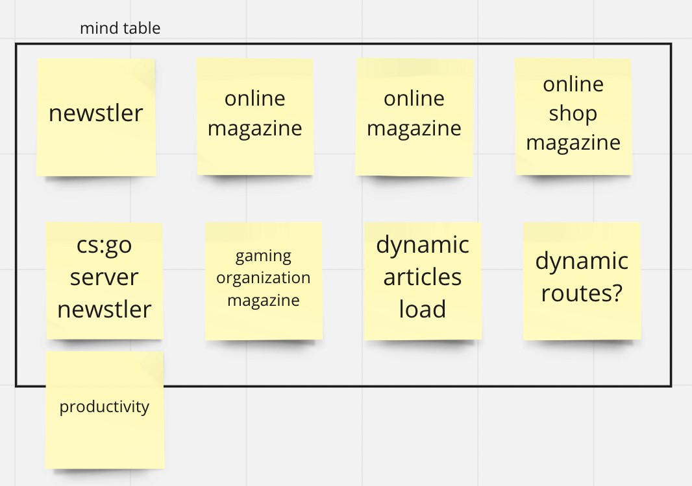
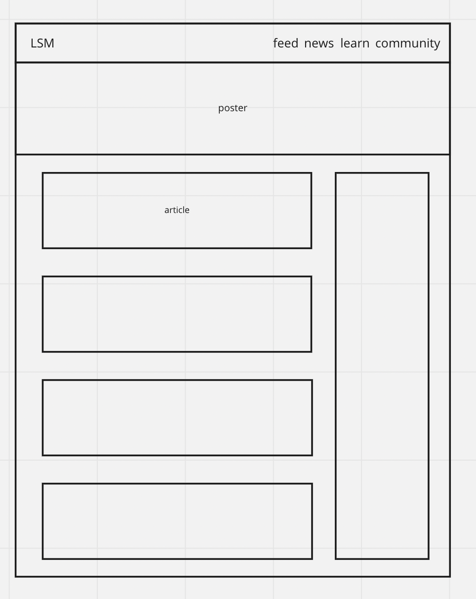

Your name:
Dmitrii Danev
Introduction:
The essential story being told by my site is about productivity and time management. I think that in points of this task, the magazine feed-like structure is more convenient for purposes like this.
Inspiration:
- Adobe creative cloud collar pallet gradients impressed me too much when I looked at the color scheme, I just accept that this one was really comfortable to me, and usage of gradient like this as the main poster can boost your mindset.
- I saw the everydayhealth site when I serf the internet, and this topic made me so comfortable and interested that I've decided to choose that topic as a main due to personal procrastination problems reasons.
- medium is the ambassador in blog/magazine-like websites, so the point has the main clue.
Accessibility:
- cross reference links
- adaptive and responsive design and markup
- html first markup, you can disable css and site still will be readable
Usability:
- The structure is simple and clean; we got feed/category and article
- this links structure and correct and doesn't make user surprised
- HTML first markup, you can disable CSS and site still will be readable
Learning:
Sorry but it's not enough to learn on this topic for me now because of my experience :( I'm not perfect, but the 1 thing i've used to, it's KISS - KISS is the truth! You can do great simple things without overheating them.
Evaluation I:
Kiss! i can do great things for a short time without conditions.
Evaluation II:
I've got bad time management and like to procrastinate. That's the point I should improve, but on the other point, I like to learn and study.
Resources:
codepen only
Appendices:
The mind table I've used for generating ideas

The main page structure (not so overwhelmed) I've made from scratch
